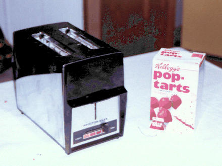

Last Updated: 2G August 1994
Author
Patrick R.Machaell.papt@pbow.comAbstract
Strawberry Pop Tarts may be a cheap and inexpensive source of incendiary devices. Toasters which fail to eject Pop Tarts cause the Pop Tarts to emit flames 10-18 inches in height.
Introduction
Last year, an article by well-known newspaper columnist Dave Barry noted that Kellogg's Strawberry Pop Tarts (SPTs) could be made to emit flames "like a blow torch" if left in a toaster too long. Given previous work in the field of food-entertainment (see Fun With Grapes - A Case Study ), it was obvious that this was a new frontier that requires further exploration. The present work describes our independent verification and experience with SPT-based combustion.
Materials Used
Only two basic materials are needed to cause SPT-combustion: a (hopefully inexpensive) toaster and some Strawberry Pop Tarts (Figure 1). In this work, the authors used Kellogg's Strawberry Pop Tarts with Real Smucker's Fruit. SPTs can be obtained either with or without frosting; the non-frosted variety were used for this experiment.
Figure 1. Toaster and Strawberry Pop Tarts
In addition to the basic materials, a number of safety-related items were needed to conduct this experiment. First, a suitable location for the experiment was required, it being expected that the kitchen was not the appropriate place for blow-torching SPTs. The author's driveway was chosen as a suitable site. Second, an appropriate means for extinguishing the SPTs would be needed; a research assistant brought along some baking soda for the purpose.